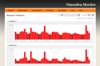

Hiawatha
Dieser Artikel wurde für die folgenden Ubuntu-Versionen getestet:
Ubuntu 16.04 Xenial Xerus
Ubuntu 14.04 Trusty Tahr
Artikel für fortgeschrittene Anwender
Dieser Artikel erfordert mehr Erfahrung im Umgang mit Linux und ist daher nur für fortgeschrittene Benutzer gedacht.
Zum Verständnis dieses Artikels sind folgende Seiten hilfreich:
Hiawatha  ist ein schlanker Webserver, der sich durch einfache Konfiguration, hohe Performance, interessante Sicherheitsfunktionen und plattformübergreifende Unterstützung (Linux, BSD, Mac OS X und Windows) auszeichnet. Das Programm unterstützt verschiedene Interpreter-Sprachen (PHP, Perl, Python und Ruby), die Anbindung von Datenbanken wie MySQL oder MariaDB und die Internet-Protokolle IPv4 und IPv6. Bei HTTPS-Verbindungen kommt mbed TLS zum Einsatz, so dass Hiawatha vom Heartbleed-Bug Anfang 2014 nicht betroffen war.
ist ein schlanker Webserver, der sich durch einfache Konfiguration, hohe Performance, interessante Sicherheitsfunktionen und plattformübergreifende Unterstützung (Linux, BSD, Mac OS X und Windows) auszeichnet. Das Programm unterstützt verschiedene Interpreter-Sprachen (PHP, Perl, Python und Ruby), die Anbindung von Datenbanken wie MySQL oder MariaDB und die Internet-Protokolle IPv4 und IPv6. Bei HTTPS-Verbindungen kommt mbed TLS zum Einsatz, so dass Hiawatha vom Heartbleed-Bug Anfang 2014 nicht betroffen war.
Das bereits seit 2002 bestehende, aber relativ unbekannte Open-Source-Projekt reiht sich wie lighttpd und nginx in die Liste der Apache-Alternativen ein.
Sicherheitsfunktionen¶
Wie eingangs erwähnt, bietet Hiawatha standardmäßig diverse Sicherheitsfunktionen gegen die wichtigsten Angriffsvektoren wie:
Denial of Service (DoS) und DDoS
Cross-Site-Scripting (XSS)
an. Dabei können Angriffe nicht nur präventiv identifiziert, sondern auch aktiv abgewehrt werden. Während Apache für diesen Zweck nachladbare Module verwendet (siehe Apache/Sicherheit), sind diese Funktionen bei Hiawatha integriert.
Installation¶
 Hiawatha ist kein Bestandteil der offiziellen Paketquellen. Man muss zur Installation daher entweder ein Fremdpaket benutzen oder das Programm selbst aus dem Quelltext kompilieren. Entscheidet man sich für letztere Variante, helfen die Anleitung Compilation and Installation und die am Ende des Artikels genannten Links weiter.
Hiawatha ist kein Bestandteil der offiziellen Paketquellen. Man muss zur Installation daher entweder ein Fremdpaket benutzen oder das Programm selbst aus dem Quelltext kompilieren. Entscheidet man sich für letztere Variante, helfen die Anleitung Compilation and Installation und die am Ende des Artikels genannten Links weiter.
Fremdpaket¶
Einfach zu installierende Fremdpakete für 32- und 64-bit-Systeme können heruntergeladen  und manuell installiert werden [1].
und manuell installiert werden [1].
Hinweis!
Fremdpakete können das System gefährden.
Anmerkung: Empfehlenswert ist eine Überprüfung der Datei-Integrität anhand der auf der Downloadseite hinterlegten Prüfsummen (siehe Hashfunktionen).
Update¶
Bei beiden Installationsvarianten müssen (Sicherheits-)Updates von Hand eingespielt werden. Wurde ein Fremdpaket verwendet, besteht der Update-Vorgang aus folgenden Schritten:
Beenden des Webservers:
sudo /etc/init.d/hiawatha stop
Sichern der Konfiguration:
sudo cp /etc/hiawatha/hiawatha.conf /root/hiawatha_hiawatha.conf
Deinstallation (inkl. Konfiguration):
sudo dpkg -P hiawatha
Herunterladen und Installieren eines neueren Fremdpakets (siehe oben)
Zurückspielen der Konfiguration:
sudo cp /root/hiawatha_hiawatha.conf /etc/hiawatha/hiawatha.conf
Anschließend prüft man, ob die bestehende Konfiguration mit der neuen Programmversion kompatibel ist:
sudo hiawatha -k
Using /etc/hiawatha/hiawatha.conf Reading hiawatha.conf Configuration OK
Neustart des Webservers:
sudo /etc/init.d/hiawatha restart
Konfiguration¶
Die Konfiguration erfolgt ausschließlich über eine einzige Datei: /etc/hiawatha/hiawatha.conf [2][3]. Die Syntax folgt dem Schema Variablenname = Variablenwert, wobei zusammengehörende Werte in einer Sektion, umschlossen von geschweiften Klammern, stehen. Im Anschluss eine Auswahl der essentiellen Variablen – eine komplette Liste enthält die Manpage .
Binding¶
Zuerst wird festgelegt, auf welchem Port der Webserver lauschen soll. Das folgende Beispiel nutzt Port 80 als Standard-Port für HTTP. Möchte man Hiawatha ohne Root-Rechte starten können, muss man einen Port größer als 1024 wählen. Oft wird z.B. auf Port 8080 ausgewichen.
Binding {
Port = 80
}
Hierbei antwortet der Webserver auf Anfragen von allen Netzwerkkarten. Mit dem Schlüsselwort "Interface" kann man dies auf eine bestimmte Netzwerkschnittstelle begrenzen, etwa zum Testen, um den Webserver nur vom eigenen PC oder lokalen Netzwerk zu erreichen. Der eigene PC lauscht dabei immer auf 127.0.0.1, siehe localhost.
Binding {
Port = 80
Interface = 127.0.0.1 # Zugriff nur über eigenen PC
}
Binding {
Port = 80
Interface = 192.168.0.10 # Zugriffe aus dem lokalen Netzwerk 192.168.0.x
}Möchte man mehrere Ports/Interfaces angeben, so erstellt man je eine neue Binding-Sektion.
TLS¶
Verschlüsselte HTTPS-Verbindungen gehen über den Standard-Port 443 und benötigen ein X509-Zertifikat, dessen Pfad mit TLScertFile angegeben wird.
Binding {
Port = 443
TLScertFile = Zertifikat.pem
}SSL-Zertifikate können bei einer "Certificate Authority" (CA) kommerziell erworben werden und dienen dazu, die Identität des Webseitenbetreibers zu bestätigen. Ein solches Zertifikat kann man sich mit ssl-cert auch selbst generieren, wobei die meisten Browser einem selbstsigniertem Zertifikat per se nicht vertrauen und einen Warnhinweis anzeigen.
Hiwatha erlaubt auch Server Name Indication, die Auslieferung mehrerer SSL-Websites über eine IP-Adresse (siehe Abschnitt SNI weiter unten).
Virtual Hosts¶
Wer Virtual Hosts nutzen möchte, kann dies auch zwei Arten umsetzen. Zum einen im entsprechenden Abschnitt:
VirtualHost {
Hostname = www.meine-domain.de
WebsiteRoot = /var/www/meine-domain/public
StartFile = index.php
AccessLogfile = /var/www/meine-domain/log/access.log
ErrorLogfile = /var/www/meine-domain/log/error.log
TimeForCGI = 5
UseFastCGI = PHP5
}oder mit externen Dateien in den Ordnern /etc/hiawatha/enable-sites/ bzw. /etc/hiawatha/disable-sites. Bevorzugt man die zweite Möglichkeit, benötigt es allerdings noch eine entsprechende Anweisung:
# DEFAULT WEBSITE ... Include /etc/hiawatha/enable-sites/
Auf diesem Weg ist es möglich, einen bestimmten Host zeitweilig zu deaktivieren:
sudo mv /etc/hiawatha/enable-sites/meine-domain.de /etc/hiawatha/disable-sites/ sudo /etc/init.d/hiawatha restart
SNI¶
Ein Beispiel für Server Name Indication:
Binding {
Port = 443
TLScertFile = Zertifikat.pem
}
VirtualHost {
Hostname = www.meine-domain.de
...
TLScertFile = Website_A.pem
}
VirtualHost {
Hostname = www.meine-andere-domain.de
...
TLScertFile = Website_B.pem
}Prävention und Abwehr von Angriffen¶
Da immer mehr Webserver dem Cyber-Vandalismus oder anderen Angriffen zum Opfer fallen, zählen die integrierten Sicherheitsfunktionen zu den interessanten Argumenten pro Hiawatha. Ein kurzes Beispiel (weitere Optionen sind den nachfolgenden Tabellen zu entnehmen):
# BANNING SETTINGS # Deny service to clients who misbehave. # BanOnGarbage = 300 BanOnInvalidURL = 60 BanOnMaxPerIP = 5 BanOnMaxReqSize = 300 BanOnWrongPassword = 6:900 BanOnSQLi = 900 KickOnBan = yes RebanDuringBan = yes BanlistMask = deny LOCALHOST, deny LAN, deny WLAN
| Prävention von Angriffen | |
| Option | Beschreibung |
MaxServerLoad = N | Wenn der Server eine höhere Last als N hat, verwirft Hiawatha alle eingehenden Verbindungen (drop). |
MaxUrlLength = N | Die maximale Pfadlänge innerhalb einer URL, die als noch akzeptabel definiert ist. Ansonsten erfolgt eine Antwort mit dem Fehlercode 414 Request-URL Too Long |
MaxRequestSize = N | Die maximale Größe einer Anfrage (request) in KiB, die Hiawatha akzeptieren soll (PUT-Anfragen nicht eingeschlossen) |
ConnectionsPerIP = N | Begrenzen der maximalen Anzahl gleichzeitiger Verbindungen pro IP-Adresse |
PreventXSS = yes/no | Cross-Site-Scripting vorbeugen, in dem die Zeichen <=, >=, '' und "" in der URL durch einen Unterstrich _ ersetzt werden |
PreventCSRF = yes/no | Cross-Site-Request-Forgery vorbeugen, in dem alle durch den Browser gesendeten Cookies beim Verweis von externen Webseiten ignoriert werden |
PreventSQLi = yes/no | Einer SQL-Injection durch Detektierung vorbeugen und Abweisen (deny) der Anfrage mit dem Fehlercode 409 Conflict |
DenyBody = regular expression | Wenn im body der Anfrage eine Zeichenkette enthalten ist, die sich mit regular expression deckt, den Fehlercode 403 Forbidden senden. Beispiel: DenyBody = ^.*%3Cscript.*%3C%2Fscript%3E.*$ |
| Abwehr von Angriffen | |
| Option | Beschreibung |
BanOnDeniedBody = N | Anzahl Sekunden, die eine IP-Adresse gebannt werden soll, wenn aufgrund der im body der Anfrage enthaltenen Informationen diese verweigert (denied) wird. |
BanOnFlooding = X/Y:Z | Wenn ein Client mehr als X Anfragen in Y Sekunden sendet, wird die IP-Adresse für Z Sekunden gebannt. Beispiel: BanOnFlooding = 10/1:15 |
BanOnGarbage = N | Anzahl Sekunden, die eine IP-Adresse gebannt werden soll, wenn der Fehlercode 400 Bad Request bei einer Abfrage auftritt |
BanOnInvalidURL = N | Anzahl Sekunden, die eine IP-Adresse gebannt werden soll, wenn eine invalide URL vom Client übermittelt wurde? |
BanOnMaxPerIP = N | Wie viele Sekunden soll ein Client gebannt werden, wenn die maximale Anzahl gleichzeitiger Verbindungen überschritten wurde |
BanOnMaxReqSize = N | Anzahl Sekunden, die eine IP-Adresse gebannt werden soll, wenn der Fehlercode 413 Request Entity Too Large auftritt |
BanOnWrongPassword = N:X | Anzahl Sekunden, die eine IP-Adresse gebannt werden soll, wenn bei der HTTP-Authentifizierung nach X Versuchen ein Fehler auftritt |
BanOnSQLi = N | Anzahl Sekunden, die eine IP-Adresse gebannt werden soll, wenn eine SQL-Injection erkannt wurde |
BanOnTimeout = N | Anzahl Sekunden, die eine IP-Adresse gebannt werden soll, wenn ein Timeout auftritt, bevor die erste Anfrage gesendet wird |
KickOnBan = yes/no | Wenn eine bestimmte IP-Adresse gebannt wurde, alle bestehenden Verbindungen zu dieser IP schließen |
RebanDuringBan = yes/no | Bannzeit zurücksetzen, wenn ein Client während eines Banns versucht, eine neue Verbindung herzustellen |
Unter Linux besteht darüber hinaus die Möglichkeit, AppArmor oder Grsecurity als zusätzliche Sicherungsmaßnahmen einzusetzen (Quelle: Linux security patches ).
Nutzung¶
 Hiawatha läuft als Dienst im Hintergrund. Um die verschiedenen Optionen zur Dienststeuerung zu ermitteln, verwendet man folgenden Befehl:
sudo /etc/init.d/hiawatha
Protokolldateien sind im Ordner /var/log/hiawatha/ zu finden. Wer eine grafische Kontrolle bevorzugt, sollte sich näher mit dem Hiawatha Monitor beschäftigen.
Anonymisierung der Logfiles¶
Datenschutzrechtlich ist es in Deutschland nicht erlaubt, ohne triftigen Grund (monetäre Abrechnungen, Server-Attacken, usw.) eine personenbezogene Protokollierung des Nutzungsverhaltens vorzunehmen. Das bedeutet, dass die Speicherung der vollständigen IP-Adressen nicht erlaubt ist. Deshalb sollte man in der Konfigurationsdatei /etc/hiawatha/hiawatha.conf folgende Zeile hinzufügen, um die IP-Adressen zu anonymisieren:
AnonymizeIP = yes
Anschließend muss man den Webserver neu starten, um die Änderung wirksam zu machen.
Links¶
How To Install Hiawatha Web Server on Ubuntu 16.04
- Blogbeitrag, 09/2016Highest secured Hiawatha Web Server 9.9 on Ubuntu 14.04 LTS Server
- Blogbeitrag, 12/2014Why I use Hiawatha Webserver
- Blogbeitrag, 09/2014Wachsamer Häuptling – Schlanker, sicherer Webserver Hiawatha
 - LinuxUser, 08/2012
- LinuxUser, 08/2012Der sichere Webserver Hiawatha - ADMIN Magazin, 01/2009
hiawatha.sh
- Skript zur Installation, Aktualisierung und Konfiguration unter Debian (Hiawatha, PHP-FPM, MariaDB)Webserver
 Programmübersicht
Programmübersicht
- Erstellt mit Inyoka
-
 2004 – 2017 ubuntuusers.de • Einige Rechte vorbehalten
2004 – 2017 ubuntuusers.de • Einige Rechte vorbehalten
Lizenz • Kontakt • Datenschutz • Impressum • Serverstatus -
Serverhousing gespendet von